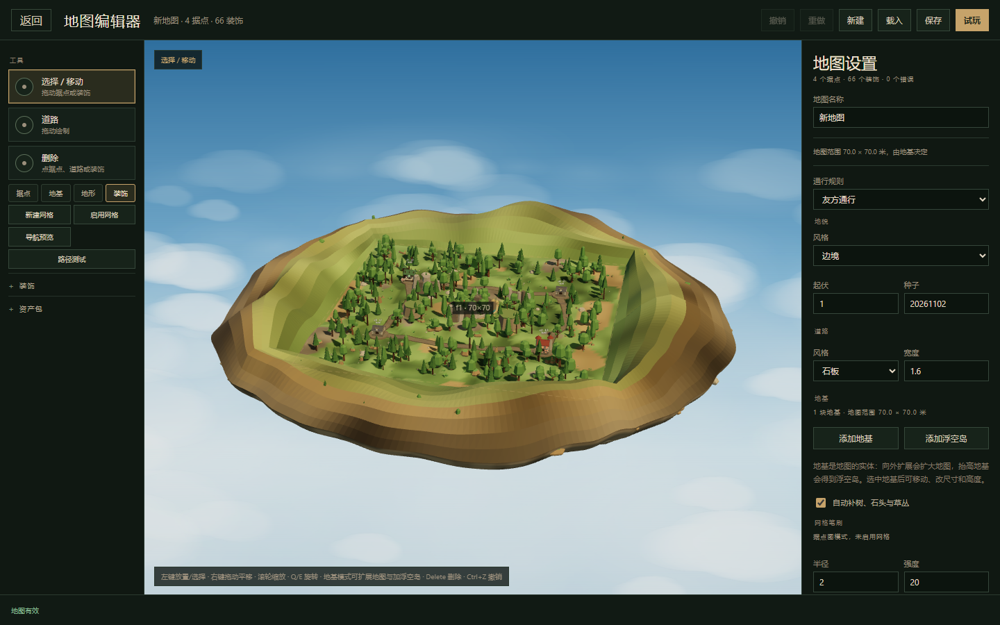
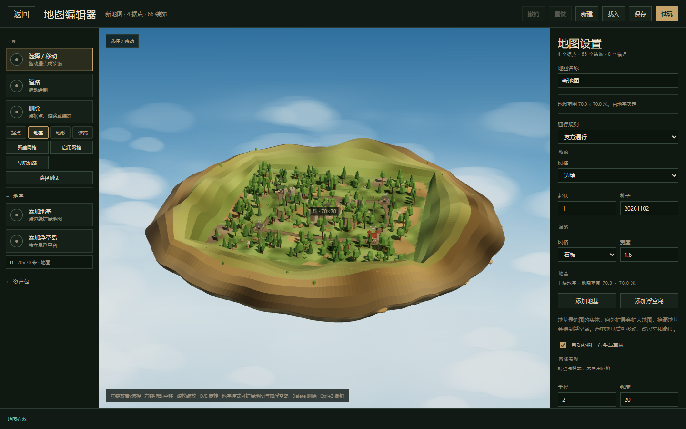

编辑器重做：从平面面板到三维场景
现在的问题不是某一个按钮难用，而是工具、对象、面板、网格模式四件事被混在同一列里；交互又停留在 2.5D，地基只能靠数字和二维轮廓去猜。建议重做编辑器壳与视口，保留数据、地形、渲染和模拟层。
“地图编辑器”默认打开新版，主菜单不再显示旧编辑器；需要旧版工具时用 ?editor=classic 回退。新版已完成 PCUI 大纲与检查器、自由环绕相机、XYZ 手柄、地基面手柄与拖拽创建/扩建/抬高/复制/删除、据点与装饰的选择和变换、道路绘制、控制点拖动与加点/删点、网格地形转换与九种笔刷、网格尺寸、地基地貌/材质与自定义贴图、六种程序化地基外形与尺寸预设、单块地基贴图、新建地基默认无补景、补景限制在地基内、左键拖动平移、道路选中标识、设置按对象拆分、地图对局时间与起始金币、据点未占领通行规则、OBJ/MTL/贴图转 GLB、资产包导入导出与移除、玩家兵团皮肤、导航预览。剩余工作是路径测试等调试工具迁移、旧编辑器代码清理与更完整的回归测试。
现状排查
先承认一个事实：编辑器不是“某些地方不顺手”，而是每次找东西、每次改地基，都要先猜它被藏在哪个模式里。下面是实际测量和代码路径，不是印象。
1.1 量化结果
| 项目 | 实测 | 后果 |
|---|---|---|
| 左栏控件 | 169 个 button / input / select / summary，全部塞在 208px 宽的一列 | 没有搜索、没有分层、找不到是必然的 |
| 检查器 | 未选中任何对象时有 1274px 内容，视口只有 900px 高 | 地图设置和对象属性混在一起，必须滚动 |
| 模式 | 据点 / 地基 / 地形 / 装饰 4 个模式，另有 9 个网格工具 | 工具与对象族交叉，切换模式只隐藏部分折叠面板 |
| 资产 | 135 个可用资产，装饰默认折叠 | 进入“装饰”模式后左栏反而变空 |
| 提交延迟 | 新增一块地基到提示出现约 638ms | 拖动只能看二维轮廓，松手才落地 |
| 拾取阈值 | 据点 34px、装饰 26px、城镇 72px | 密集地图里点不中，只能靠猜 |
1.2 四种东西混在一起
左栏同时承担了四层语义，但界面没有把它们分开：
| 层级 | 左栏里的表现 | 问题 |
|---|---|---|
| 工具 | 选择 / 道路 / 删除 / 添加地基 / 添加浮空岛 | 和对象族并列，选中“道路”后仍然能看到据点、装饰、地形面板 |
| 对象族 | 据点 / 地基 / 地形 / 装饰 | 被视为“模式”，切换后只隐藏部分面板，工具按钮不跟着变 |
| 上下文面板 | 据点折叠、地基折叠、地形资产、装饰资产、网格笔刷、资产包 | 彼此独立展开，同一时刻能看到 8 个以上折叠块 |
| 导航模式 | 新建网格 / 启用网格 / 导航预览 / 路径测试 | 属于地图设置或调试功能，却常驻工具区 |
切到“装饰”模式后，据点、地基、地形面板被隐藏，但装饰面板默认折叠，左栏只剩“装饰”“资产包”两个折叠条和一个空的网格工具区。用户想找一棵树，第一步就迷路。

1.3 地基扩建为什么难
同样的动作，现在要经过这些步骤，而且每一步都有不确定的地方：
- 切到“地基”模式。
- 点“添加地基”工具。
- 在地图外侧点击。点击落点由 screenToGround 决定：射线打中地形就取地形，打不中就落到 y=0 平面，所以点击位置和实际扩建位置经常对不上。
- 如果离最近地基超过 20 米，会新建一块 20×20 的独立平台；在 20 米内则把那块地基扩到点击点，两条轴各自外扩至少 5 米。规则没有在界面上说明。
- 高度只能去右侧数字框改，或者按 PageUp/PageDown；视口里没有 Y 轴手柄。
- 地基列表藏在地基模式的折叠块里，选中后才知道哪块是哪块。

1.4 还停留在 2.5D
“XYZ 三轴编辑”不是加一个高度输入框，而是整个编辑范式要换。现在的代码路径是：
| 能力 | 现状 | 位置 |
|---|---|---|
| 相机 | 固定俯角 28°，四向 90° 旋转，不能自由环绕，不能俯视/平视 | scene.ts 的 PITCH、rotate() |
| 对象操作 | 二维覆盖层画框、屏幕距离阈值拾取，没有三维手柄 | editor.ts 的 pickSite、pickProp、foundationQuad |
| Y 轴 | 地基高度只能改数字或 PageUp/PageDown；据点、装饰不能自由抬高 | changeFoundationField、heightAt |
| 重建 | 每次提交都 compileDocument + createGame + 重建 BattleScene | EditorController.rebuild() |
这解释了“哪哪都不得劲”的另一半：所有编辑都发生在二维投影上，用户看不到高度、看不到体积、也看不到修改会怎么落地。
1.5 结论
修补旧面板的收益很低。正确做法是保留底层数据与渲染能力，重做两层：工具驱动的信息架构和带相机与三维手柄的编辑视口。地基则升级成真正带 X/Y/Z 的平台对象。
需求与目标
需求可以归结成一句话：一个能自由搭地图、始终知道自己在改什么、每一步都能直接看到结果的三维编辑器。
2.1 必须成立
- XYZ 三轴编辑：地基、据点、装饰都能在视口里直接沿 X/Y/Z 移动、缩放、旋转，而不是只改二维坐标。
- 地基是编辑单位：新增、删除、复制、移动、缩放、抬高；扩建地图和搭浮空岛是同一套动作。
- 分类有规律：工具是工具，对象是对象，属性是属性；任何时候都能在一处找到全部对象。
- 操作可预期：点击、拖动、吸附、撤销都有一致反馈；不允许“点这里可能新建、也可能扩建”的隐式规则。
- 简洁：默认界面只保留当前工具需要的东西；其余收进折叠区或调试区。
2.2 保留
- MapDocument 数据层、编译与校验、存档与自动保存。
- 地形、浮岛外壳、资产包、场景与试玩。
- 据点图与网格图两种导航；网格笔刷不退化。
2.3 不在本轮
- 不做通用三维建模器，不做任意多边形地块。
- 不做多人协同、图层权限、脚本化编辑器。
- 不在第一阶段重做网格地形算法；先让交互正确。
新编辑器
界面按“工具 → 上下文面板 → 视口 → 检查器”四段划分。左侧面板的内容由当前工具决定，不再用对象族模式互相隐藏。
3.1 布局
大纲 · 搜索
地基 f1
线框只表达分区与层级，不代表最终配色。
3.2 各区域职责
| 区域 | 内容 | 规则 |
|---|---|---|
| 顶部 | 返回、地图名、撤销/重做、保存、试玩、视角切换、网格与吸附 | 只放全局动作，不放对象属性 |
| 左轨道 | 选择 V、移动 W、旋转 E、缩放 R、放置 B、道路 P、地形 G | 同一时刻只有一个工具；快捷键直接切换 |
| 左面板 | 随工具变化：选择工具显示大纲，放置工具显示资产库，道路显示道路选项，地形显示笔刷 | 不再有“据点/地基/地形/装饰”四个平行模式 |
| 视口 | 网格、坐标轴、地基盒体、选中框、XYZ 手柄、尺寸标注 | 所有直接操作都在这里发生 |
| 右检查器 | 仅当前选择：变换、尺寸、类型属性、外观、操作 | 未选择时显示地图设置，分折叠区 |
| 底栏 | 光标 X/Y/Z、网格、吸附、选择摘要、错误数、当前工具提示 | 始终可见，不再靠猜坐标 |
3.3 工具模型
| 工具 | 快捷键 | 左面板 | 视口操作 |
|---|---|---|---|
| 选择 | V | 大纲、分组、搜索 | 点击选中，Shift 多选，拖动沿地面移动，F 聚焦 |
| 移动 | W | 移动选项：世界/局部、贴地、吸附 | XYZ 箭头手柄；地基显示面与角手柄 |
| 旋转 | E | 旋转选项：15° 步进、局部轴 | Y 轴圆环；据点与装饰绕 Y 旋转 |
| 缩放 | R | 缩放选项：等比/分轴 | 地基直接改宽/深/厚；装饰改统一缩放 |
| 放置 | B | 资产库：据点、装饰、地形、地基 | 点地面放置；地基拖动矩形；拖入视口 |
| 道路 | P | 道路样式、宽度、控制点列表 | 连续点击画折线，拖动控制点，Enter 结束 |
| 地形 | G | 网格笔刷、地表、阻挡、可走 | 仅网格地图启用；据点图显示说明 |
3.4 相机与三轴手柄
相机用 OrbitControls，默认自由环绕；保留一个“对局视角”按钮，一键回到游戏镜头，方便检查最终画面。右键环绕、中键平移、滚轮缩放、F 聚焦选中对象。
| 操作 | 映射 | 说明 |
|---|---|---|
| 环绕 | 右键拖动 / Alt + 左键 | 俯仰限制在 5°–85°，不会翻到地下 |
| 平移 | 中键拖动 / Shift + 右键 | 沿屏幕平面平移 |
| 缩放 | 滚轮 | 朝光标方向缩放 |
| 视角预设 | 顶视 / 前视 / 侧视 / 对局 | 顶视用于对齐网格，对局用于验收 |
| 网格 | G 切换，[ ] 改步长 | 默认 1 米，地基边缘吸附 0.5 米 |
3.5 地基工作流
地基从“地图设置里的外壳选项”升级为平台对象。它的数据是：中心 X/Z、顶面 Y、宽、深、厚、外壳。以下动作都在视口里完成，检查器提供精确数值。
| 动作 | 操作 | 反馈 |
|---|---|---|
| 新建平台 | B 打开资产库 → 地基 → “平台” → 在地面拖出矩形 | 拖动时显示半透明盒体与尺寸标注；松手生成并选中 |
| 新建浮空岛 | 资产库 → 地基 → “浮空岛” → 先设高度 → 拖矩形 | 按设定 Y 生成；或生成后拖 Y 箭头抬高 |
| 扩建地图 | 选中地基 → 拖东/西/南/北面手柄；或检查器点“东 +10m” | 面跟随光标，吸附 0.5 米；松手后地形只重建这一块 |
| 抬高/降低 | 拖 Y 箭头；或检查器输入 Y | 实时显示离地高度与顶面标尺 |
| 复制 | Ctrl+D | 沿 +X 偏移一个身位，自动选中副本 |
| 删除 | Delete 或右键菜单 | 最后一块不可删；删除前高亮将受影响的据点/装饰 |
| 重叠与合并 | 自动 | 同高度且并集为矩形的相邻平台合并；不同高度保持独立，检查器给出提示 |
地图范围不再由“宽/高”输入框决定，而是所有地基的并集；底栏实时显示范围与面积。据点、道路、装饰的越界校验也随之改为并集判定。
3.6 大纲、资产库、检查器、底栏
| 面板 | 内容 | 要点 |
|---|---|---|
| 大纲 | 按 地基 / 据点 / 道路 / 装饰 分组；搜索；行内显示 id、尺寸、高度、归属 | 点击选中并聚焦；双击改名；右键菜单 |
| 资产库 | 据点、装饰、地形、地基四个标签；搜索、分类筛选、最近使用 | 卡片显示名称、占地、来源；拖入视口或点击后放置 |
| 检查器 | 变换 X/Y/Z、尺寸、旋转、类型属性、外观、操作 | 字段支持拖动数值；修改立即预览 |
| 底栏 | 光标坐标、网格、吸附、选择摘要、诊断 | 坐标包含 Y；错误可点击定位 |
3.7 快捷键
| 键 | 动作 | 键 | 动作 |
|---|---|---|---|
| V | 选择 | W | 移动 |
| E | 旋转 | R | 缩放 |
| B | 放置 | P | 道路 |
| G | 网格开关 | F | 聚焦选中 |
| Delete | 删除 | Ctrl+D | 复制 |
| Ctrl+Z | 撤销 | Ctrl+Shift+Z | 重做 |
| [ ] | 网格步长 | Esc | 取消当前操作 |
3.8 会消失的东西
- 四个对象族模式标签，以及“切模式后左栏变空”的隐藏逻辑。
- 常驻左栏的网格操作、导航预览、路径测试，收进“导航”折叠区。
- 地图设置里与选择无关的长表单，未选择时才显示，且默认折叠。
- “点外侧扩 20 米内的地基、否则新建”的隐式规则，换成显式的平台工具与面手柄。
- 网格地图里可编辑的地基尺寸，改成只读说明。
3.9 同一件事的前后对比
| 任务 | 现在 | 新编辑器 |
|---|---|---|
| 地图向右扩建 10 米 | 切地基模式 → 点添加地基 → 在地图外猜位置 → 确认是否扩到了正确的地基 | 选中地基 → 拖东面手柄 10 米，或点“东 +10m” |
| 放一棵指定的树 | 切装饰模式 → 展开装饰 → 在 135 个资产里滚动 | B → 装饰 → 搜索“松” → 点卡片 → 点地面 |
| 找到并选中浮空岛 | 切地基模式 → 展开地基折叠 → 在一行列表里点 | 大纲里点“地基 f2”，或在视口直接点 |
| 把平台抬高 8 米 | 选中 → 右侧找高度输入框 → 输入 | 拖 Y 箭头；检查器同步显示 |
| 把装饰放到二层平台 | 只能放在地形高度，无法自由抬高 | 选中装饰 → 关“贴地” → 拖 Y 箭头 |
技术方案
不换引擎，不引入 React。保留现有 three.js 与地图数据层，新增一个独立的编辑视口和编辑器状态层，旧编辑器以 ?editor=next 并行存在，达到对等后替换。
4.1 保留与重做
| 层 | 处理 | 理由 |
|---|---|---|
| MapDocument / 编译 / 校验 | 保留，扩展地基字段 | 已经是唯一真相，测试覆盖足够 |
| 地形与浮岛几何 | 保留，改为按平台增量更新 | 视觉风格已经成型，重写收益低 |
| 资产包 / GLB 加载 | 保留 | 与编辑器结构无关 |
| 模拟与回放 | 保留 | 编辑器只产出 MapDef |
| 编辑器 UI | 重做 | IA 与交互是主要问题 |
| 编辑视口 | 新增 | 现用 BattleScene 固定镜头，不适合编辑 |
4.2 模块划分
apps/client/src/editor/
shell.html.ts 顶部、左轨道、面板、检查器、底栏的结构
editor-state.ts document / selection / tool / snap / history
editor-history.ts 事务、合并拖动、撤销标签
editor-viewport.ts scene、OrbitControls、TransformControls、网格、轴、拾取
editor-scene.ts 地基/据点/道路/装饰的网格构建与增量更新
editor-outliner.ts 大纲与搜索
editor-library.ts 资产库与分类
editor-inspector.ts 选中对象的属性面板
editor-tools/ select / move / place / road / terrain
editor-controller.ts 组装与生命周期不再用一个 2600 行的 editor.ts 承载全部逻辑。大纲与检查器的通用控件优先用 PCUI，只有地图语义相关的部分自绘。
4.3 数据模型
地基升级为平台对象，建议 schema 4：
interface FoundationDraft {
id: string;
pos: [number, number]; // 中心 X/Z，分米
elevation: number; // 顶面 Y，米
size: [number, number]; // 宽/深，分米
thickness: number; // 厚度，米，替换 depth
rotationY?: number; // 朝向，度，先支持 15° 步进
assetId?: string;
scale: number;
rotation: number; // 外壳自身朝向，保留
}- 旧字段 depth 迁移为 thickness；没有地基的旧文档继续生成一块覆盖原范围的平台。
- 据点、装饰增加可选的 yOffset，关掉“贴地”时生效。
- 道路控制点保留二分米坐标，Y 由地形采样或手动偏移。
4.4 渲染与增量更新
| 场景 | 策略 | 目标 |
|---|---|---|
| 选中/环绕 | 只更新相机和覆盖层 | 60fps |
| 拖动地基 | 移动平台盒体与幽灵地形，松手才重建该平台 | 拖动 < 16ms/帧 |
| 提交地基 | 只重建受影响平台的地形与外壳 | < 120ms |
| 放置装饰 | 只新增一个对象，不重建整个场景 | < 30ms |
| 切换视角 | 复用同一相机，只改变控制参数 | 即时 |
编辑场景与 BattleScene 分离：编辑时不创建模拟，不加载单位动画；试玩时才创建游戏场景。
4.5 状态、历史与拾取
- EditorState 用订阅者模式驱动面板，避免面板之间互相调用。
- 拖动开始时开启事务，移动只更新临时状态，松手提交一条带标签的撤销记录。
- 拾取用 three.js 射线对注册表里的对象做精确命中，不再用屏幕距离阈值；同一位置有多个对象时优先选中的层或最高的平台。
- 地基盒体手柄、TransformControls 和检查器输入共用同一个变换提交函数，保证三条路径行为一致。
4.6 引擎与 UI 备选
| 方案 | 优点 | 结论 |
|---|---|---|
| three.js + OrbitControls + TransformControls | 零新依赖，完全控制风格，复用现有地形与资产 | 推荐 |
| Babylon.js Inspector | 自带属性面板与手柄 | 要重写渲染与地形，风格不可控，放弃 |
| PlayCanvas Editor Frontend | 完整编辑器前端，MIT | 依赖 PlayCanvas 引擎与后端，不整体搬；PCUI 可独立复用 |
| React + react-three-fiber + drei | 生态成熟，手柄现成 | 给现有 vanilla 客户端引入第二套 UI 栈，收益不抵成本，暂不采用 |
| PCUI 做大纲与检查器 | MIT，专为编辑器工具设计，树、属性行、向量输入、历史都有 | 推荐 |
UI 组件层的完整比选见下一节，那里会给出“直接用、只借鉴、不用”的清单。
4.7 风险
- 自由相机让“二维点击放置”全部失效，放置与拾取要同步改成三维射线，工作量集中在视口层。
- 按平台增量重建地形需要拆分现有 buildTerrain，先以整场景重建兜底，再逐块优化。
- 地基允许旋转后，地形采样与相邻合并都要按旋转矩形处理；第一阶段先支持 15° 步进并只对轴对齐做合并。
- 网格地图的导航仍假设单块矩形，保留“单块地基、尺寸只读”的限制并在 UI 说明。
开源可复用方案
有，而且分两类：完整的开源编辑器和编辑器 UI 组件库。结论是：完整编辑器不值得直接搬，组件库值得直接用。三轴手柄、相机、大纲、属性面板、撤销这些通用能力都有成熟实现，没必要自己设计。
5.1 完整编辑器
| 项目 | 许可 | 技术栈 | 可复用程度 | 结论 |
|---|---|---|---|---|
| three.js editor | MIT | three.js / 原生 JS | 视口、层级、检查器、手柄、历史、工具栏 | 交互参考；整体 fork 需改数据模型、序列化和命令，隐性成本高 |
| PlayCanvas Editor Frontend | MIT | PlayCanvas 引擎 + TS + PCUI | 完整编辑器前端、资产、层级、检查器 | 依赖 PlayCanvas 引擎与 Editor 后端，不整体搬；PCUI 可独立用 |
| Babylon.js Editor | Apache-2.0 | Electron + React + Babylon | 完整桌面编辑器、材质、脚本、资产 | Babylon 耦合，只做参考 |
| Triplex | 已开源，仓库 LICENSE 需确认 | React + R3F | 视觉编辑、属性面板、代码同步、撤销 | 只有接受 React 栈时才值得评估 |
| Spoke | 非 MIT，仓库标注 other | React + three.js | 场景层级、检查器、资产、多人 | 许可与 Hubs 数据模型限制，只做 IA 参考 |
5.2 UI 组件库
| 库 | 许可 | 适用 | 能省掉什么 | 结论 |
|---|---|---|---|---|
| PCUI | MIT | 原生 TS 或 React | TreeView 大纲、Panel、NumericInput、VectorInput、SelectInput、Menu、Toolbar、主题 | 推荐 |
| @playcanvas/observer | MIT | 原生 TS | 数据绑定、变更通知、历史 | 可配合 PCUI，替换手写撤销栈 |
| Tweakpane | MIT | 原生 TS | 检查器折叠面板、数值/向量/颜色控件 | 备选；没有大纲与树 |
| lil-gui | MIT | 原生 TS | 调试参数面板 | 只适合调试，不用于正式编辑器 |
| drei + leva | MIT | React | TransformControls、GizmoHelper、Grid、环境、检查器 | 只有 React 路线才用 |
5.3 推荐组合
直接用
three.js 自带的 OrbitControls、TransformControls、GridHelper、Raycaster；PCUI 的 TreeView、Panel、NumericInput、VectorInput、SelectInput、Menu、Toolbar。相机与三轴手柄不再自己写，属性面板与大纲也不再手搓。
只借鉴
three.js editor 的工具栏与检查器分区；PlayCanvas 的层级、资产、检查器布局；0 A.D. Atlas 的 RTS 地图编辑流程；Tiled / LDtk 的大纲、图层、笔刷、撤销。
仍然自己写
MapDocument 与场景对象的适配、地基盒体的面/角/Y 手柄、按平台重建地形、地图范围并集、导航与试玩。这些是地图语义，没有现成件可替。
不要整体 fork
完整编辑器都绑定自己的场景模型、引擎或后端。搬进来后，改数据模型、删无关面板、跟上游升级的成本，通常高于用组件库搭一个薄壳。
5.4 为什么不是直接 fork three.js editor
- 它是应用不是库：文档模型是 three 的 Object3D，序列化是场景 JSON，命令系统围绕通用对象转。我们的真相是 MapDocument，需要反向适配。
- 它的检查器包含几何、材质、脚本、动画、播放器等大量与地图无关的面板，删减和改版都要维护一份分叉。
- 它的 UI 风格是通用深色编辑器，和 Marchlands 的纸面/森林/黄铜体系不一致，最终仍要重做主题。
- 值得拿的是它的交互结构：视口居中、顶部模式、左侧层级、右侧检查器、底部状态；这些在方案里已经吸收。
5.5 许可注意
- MIT：PCUI、Observer、Tweakpane、lil-gui、drei、leva、three.js 与 three.js editor，可直接商用，保留版权声明。
- Apache-2.0：Babylon.js Editor，可用但需保留声明与变更说明；引擎不匹配，实际不采用。
- MPL / other：Spoke，文件级 copyleft，修改文件需开源；只做参考。
- GPL：Tiled、0 A.D.，只借鉴交互，不复制代码。
- Triplex 已开源到 Poimandres，但仓库 LICENSE 需在引入前确认。
5.6 对工期的影响
按推荐组合，通用 UI 与三轴交互基本不用从零设计：相机、手柄、大纲树、属性行、菜单、数据绑定与历史都有现成件。真正的工作量集中在地图语义和视口与地形的联动，这两块本来也无法靠开源项目绕开。相比全自研，预计能省掉一半以上的编辑器 UI 代码。
5.7 参考
- three.js editor · MIT
- PlayCanvas Editor Frontend 开源公告 · MIT
- PCUI 与 Observer · MIT
- Babylon.js Editor · Apache-2.0
- Triplex 开源公告
- Spoke · 许可需按仓库确认
- Tiled 与 LDtk · 交互参考
实施阶段
先把“看得见、找得到、点得中”做出来，再把地基三轴编辑做扎实，最后迁移其余工具。每一阶段都能独立验收，不用等到全部完成。
编辑器壳与视口
新布局、工具轨道、大纲、检查器、底栏；UI 控件用 PCUI，相机用 OrbitControls，视口加入网格、坐标轴、对象注册表与射线拾取；旧数据只读渲染。挂在 ?editor=next。
地基三轴编辑
平台盒体、面/角/Y 手柄、资产库的地基标签、拖动建平台、检查器扩建按钮、地图范围并集、增量地形重建。
据点、装饰、道路
TransformControls 接管移动/旋转/缩放；贴地开关与 Y 偏移；右键菜单；多选；大纲展开到 66 个装饰。
资产库、地形与导航
资产搜索与分类、最近使用；网格笔刷迁入地形工具；导航预览与路径测试收进调试区；试玩与自动保存。
替换与清理
达到功能对等后把默认入口切到新编辑器，删除旧 UI，补 e2e、截图与文档。
6.1 每阶段的测试
- 单测：地基几何、并集范围、合并规则、schema 迁移。
- e2e：环绕相机、拖面扩建、拖 Y 抬高、撤销、从大纲选中、搜索资产、试玩往返。
- 视觉：每个阶段留一张 1440×900 截图，和旧版并排检查。
待确认
建议自由环绕，保留“对局视角”按钮。固定俯视无法做真正的 XYZ 编辑，但自由相机需要重做全部拾取与放置逻辑。
建议先 15° 步进，轴对齐相邻自动合并；任意角度会显著增加地形采样与合并复杂度。也可以先只做 90°。
建议接受。数据、地形、资产、模拟都不动，只替换 UI 与编辑视口；旧编辑器并行保留到功能对等。
建议继续。网格寻路假设单块矩形，改成多平台需要同时改导航、网格坐标与桥面逻辑；本轮先把据点图的多平台做顺。
建议采用。大纲、属性行、向量输入、菜单、数据绑定与历史直接用 MIT 组件，地图语义自己写；代价是需要做一套主题覆盖，并接受它的组件习惯。
7.1 我建议的下一步
确认路线后直接进入 P0+P1：PCUI 壳、自由相机、大纲、检查器、地基盒体与 XYZ 手柄。旧的编辑器不再做局部修补，只修阻断性 bug。完成 P1 后给你一版可试用的 ?editor=next，用同一张地图对比新旧两版，再决定是否切换默认入口。